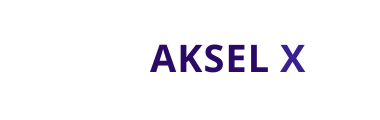

Ideia Central & Estratégia
Conceito
História do símbolo. Duas trajetórias orbitais se cruzam no centro do sistema: a órbita que existe hoje encontra a órbita do futuro, e do cruzamento nasce o produto — o X como foco de transformação. Os traços em degradê de violeta e a pausa visual no centro dão, sem gradiente, uma leitura de movimento contínuo.
Justificativa estratégica. Para quem vende o futuro (IA, deep tech, automação inteligente), a identidade precisa provar sofisticação técnica sem parecer genérica. A paleta violeta profundo comunica status e vanguarda; a tipografia geométrica Space Grotesk projeta tecnologia limpa; as curvas orbitais tornam a marca memorável e "de produto premium". É a proposta com maior potencial de viralidade de imagem.
Justificativa estratégica. Para quem vende o futuro (IA, deep tech, automação inteligente), a identidade precisa provar sofisticação técnica sem parecer genérica. A paleta violeta profundo comunica status e vanguarda; a tipografia geométrica Space Grotesk projeta tecnologia limpa; as curvas orbitais tornam a marca memorável e "de produto premium". É a proposta com maior potencial de viralidade de imagem.
VanguardistaPremiumEm movimentoIA e futuroAlto designEleganteDeep tech
Símbolo
Órbita Axial
Fundo claro
Fundo escuro
Logotipo
Versões oficiais

Horizontal · fundo claro
Horizontal · fundo escuro

Monocromático preto

Monocromático branco
Paleta Cromática
Primária · secundária · apoio
PrimáriaUltraviolet#2A0A66
RGB 42 10 102 · CMYK 82 90 0 40
Pantone ~2757 C
RGB 42 10 102 · CMYK 82 90 0 40
Pantone ~2757 C
PrimáriaIris#3B1E8F
RGB 59 30 143 · CMYK 82 78 0 15
Pantone ~2685 C
RGB 59 30 143 · CMYK 82 78 0 15
Pantone ~2685 C
AcentoOrchid#B79CED
RGB 183 156 237 · CMYK 30 33 0 0
RGB 183 156 237 · CMYK 30 33 0 0
ApoioNébula Mist#ECE7FF
RGB 236 231 255 · CMYK 8 10 0 0
RGB 236 231 255 · CMYK 8 10 0 0
ApoioDeep Plum#15032E
RGB 21 3 46 · CMYK 88 95 0 70
RGB 21 3 46 · CMYK 88 95 0 70
AcentoVioleta Orbital#6A3FD8
RGB 106 63 216 · CMYK 68 68 0 0
RGB 106 63 216 · CMYK 68 68 0 0
ApoioWhite#FFFFFF
RGB 255 255 255 · CMYK 0 0 0 0
RGB 255 255 255 · CMYK 0 0 0 0
Tipografia
Sistema tipográfico
AKSEL X
O futuro encontra o hoje.
orbital::merge(2026)
| Uso | Família | Estilo |
|---|---|---|
| Logotipo / títulos | Space Grotesk | Bold 700, letter-spacing −2 em display |
| Corpo / interface | Inter | Regular 400, Medium 500 |
| Dados, versões, código | IBM Plex Mono | Regular 400 |
Aplicações
Amostras premium e digitais
Cartão de visita
App icon
Avatar
AKSEL X
Capa social
Favicon
Diferenciais & Limitações
Leitura honesta
Alto potencial de imagem premium e memorável.
Funciona em superfícies escuras e eventos (iluminação, paredes de LED).
Espaço favorável para animação do símbolo em mídia digital.
Diferencia da maioria das marcas de tech (que usam azul/cinza).
Menos sóbria para setores muito conservadores (licitações clássicas).
As curvas perdem definição em tamanhos muito reduzidos — limite mínimo alto.
Violeta deve ser aplicado com disciplina para não parecer "gamer".
Arquivos Entregues
03 · Logotipos Vetoriais
PROPOSTA_03/ akselx_horizontal_color.svg — logotipo horizontal colorido akselx_vertical_color.svg — logotipo vertical (empilhado) akselx_simbolo_color.svg — símbolo isolado akselx_mono_black.svg — versão monocromática preta akselx_mono_white.svg — versão monocromática branca akselx_favicon_color.svg — favicon/símbolo reduzido